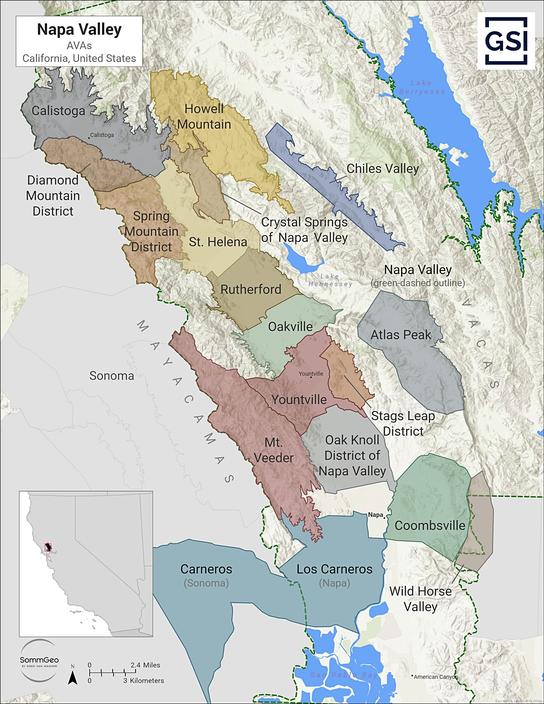
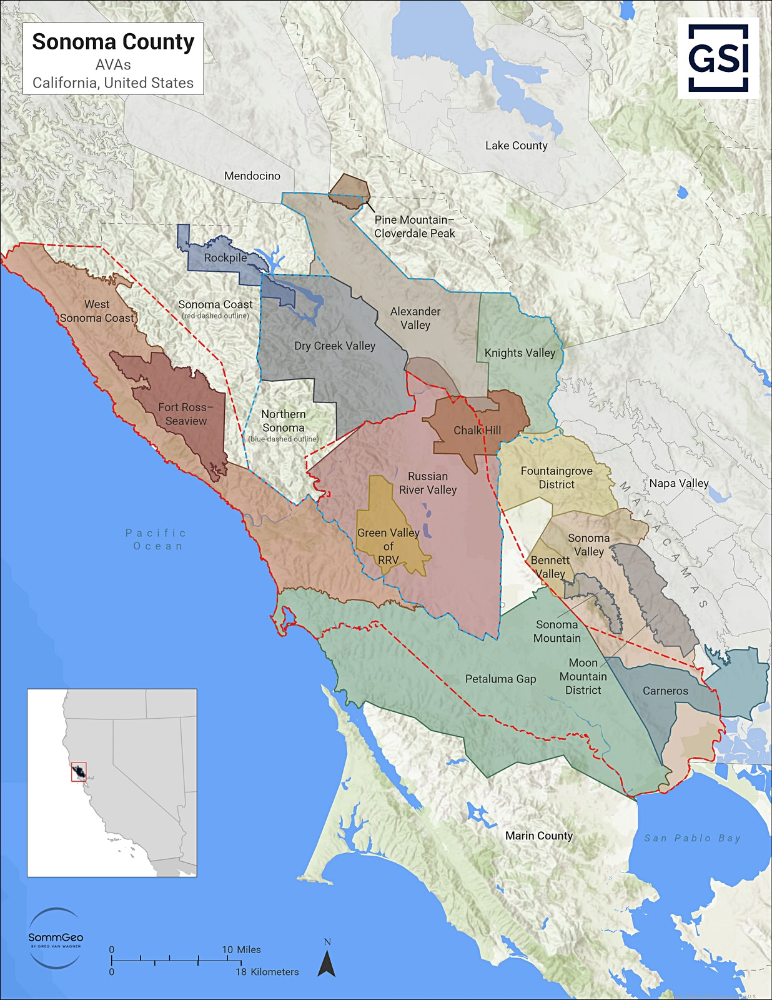
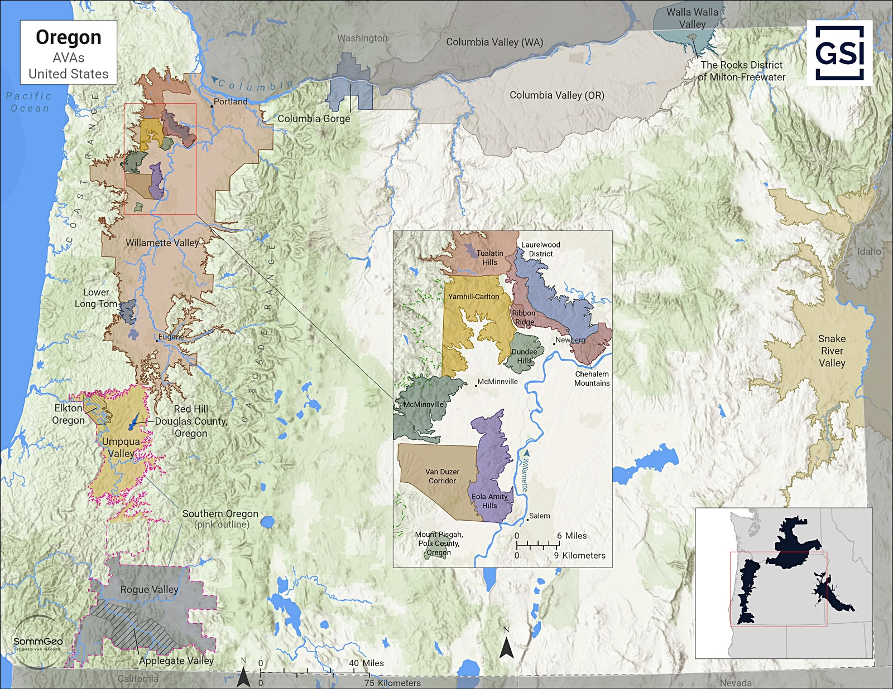

← WSET2 Study
Maps
USA
California
Napa Valley

Napa Valley AVAs. Map: SommGeo / GSI. Click to enlarge.
Sonoma County

Sonoma County AVAs. Map: SommGeo / GSI. Click to enlarge.
Oregon

Oregon AVAs. Map: SommGeo / GSI. Click to enlarge.
×